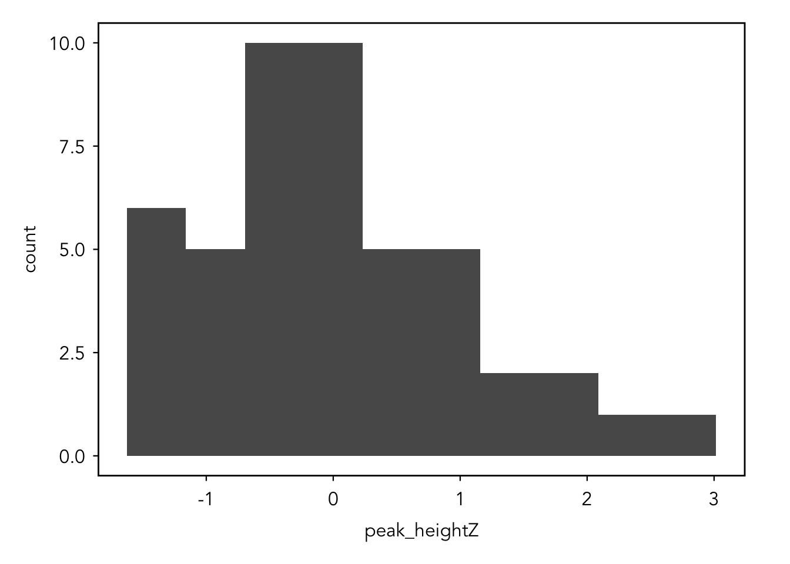
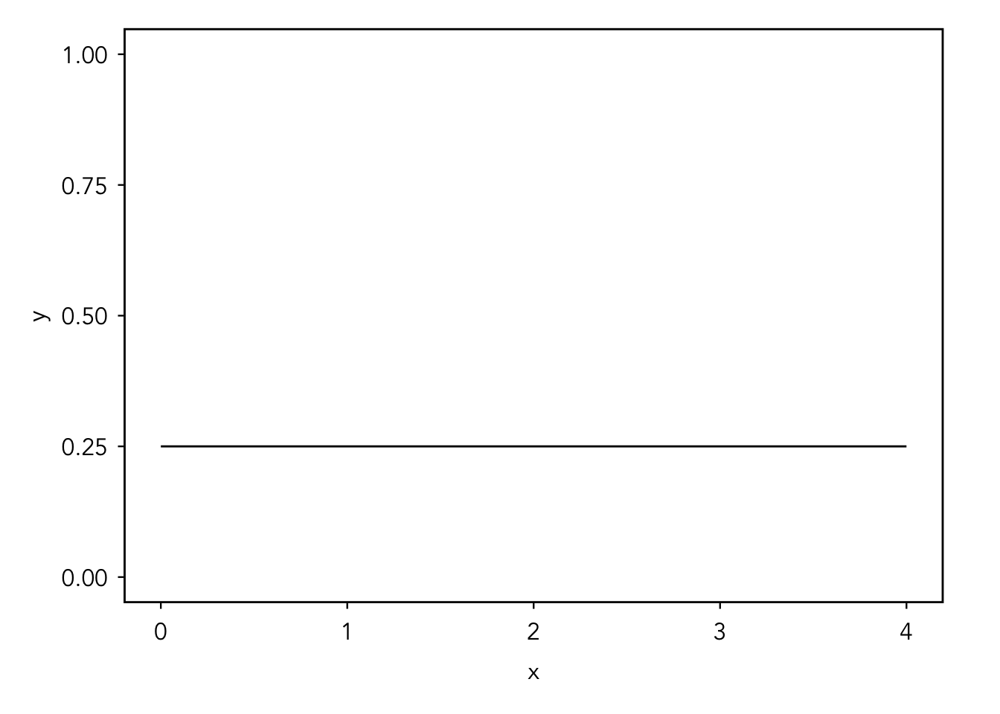

# required packages
library(tidyverse)
library(brms)
library(bayesplot)
# data frame (assuming your data are in the folder called "files")
dat <- read_csv("files/meineke-primary-metabolism-GCTOFMS.csv")metabolomics analysis with brms
<Grace write intro>
Part 0: getting familiar with the data
Let’s make sure we are set up for success. Let’s load into memory the two packages we need (tidyverse and brms) and the data. Please download the data using the button below and ensure that you are pointed to the proper working directory (hint: setwd()) before you load it.
Wrangling into a readable format
First, let’s wrangle the data into a machine- and human-readable format. Pretty much, we want to take the metadata from the first few rows and add it back in the long format. Then, we want to scale the peak height variable so it is
# get dimensions of data
dim(dat)[1] 711 55# look at the first couple of rows
# the first 7 columns are blank until the column names
head(dat, n = 10L)# A tibble: 10 × 55
...1 ...2 ...3 ...4 ...5 ...6 ...7 `file id` `220518bKCsa07_1`
<chr> <chr> <chr> <chr> <chr> <chr> <chr> <chr> <chr>
1 <NA> <NA> <NA> <NA> <NA> <NA> <NA> mx class 656732
2 <NA> <NA> <NA> <NA> <NA> <NA> <NA> mx sample 220518bKCsa07_1
3 <NA> <NA> <NA> <NA> <NA> <NA> <NA> label 10_005
4 <NA> <NA> <NA> <NA> <NA> <NA> <NA> comment 10
5 <NA> <NA> <NA> <NA> <NA> <NA> <NA> species leaves
6 <NA> <NA> <NA> <NA> <NA> <NA> <NA> organ leaves
7 <NA> <NA> <NA> <NA> <NA> <NA> <NA> treatment City - City
8 BinBase name ret.i… quan… BB id mass… PubC… KEGG InChI Key <NA>
9 xylulose 553450 173 31632 85:1… 4392… C003… LQXVFWRQ… 1511
10 xylose 544100 103 1147… 85:8… 1351… C001… SRBFZHDQ… 7805
# ℹ 46 more variables: `220518bKCsa19_1` <chr>, `220518bKCsa37_1` <chr>,
# `220518bKCsa06_1` <chr>, `220518bKCsa20_1` <chr>, `220518bKCsa36_1` <chr>,
# `220518bKCsa12_2` <chr>, `220518bKCsa38_1` <chr>, `220518bKCsa24_1` <chr>,
# `220518bKCsa04_1` <chr>, `220518bKCsa32_1` <chr>, `220518bKCsa41_1` <chr>,
# `220518bKCsa40_1` <chr>, `220518bKCsa15_1` <chr>, `220518bKCsa05_1` <chr>,
# `220518bKCsa31_1` <chr>, `220518bKCsa22_1` <chr>, `220518bKCsa34_1` <chr>,
# `220518bKCsa18_1` <chr>, `220518bKCsa10_1` <chr>, …# make an id row so we can match samples later
# we are adding NAs for the blank columns for now
values <- as.character(c(rep(NA, 7), "id", 1:47))
id_row <- matrix(values, nrow = 1) %>% as.data.frame()
# make the col names the same as the data
names(id_row) <- colnames(dat)
# add the id row to the data frame
dat <- dat %>% add_row(.before = 1, !!!id_row)
# get the metadata (from the first 8 columns) and reformat
meta_dat <- dat[1:8, 8:55] # get data
names(meta_dat) <- as.vector(meta_dat[1,]) # rename
meta_dat <- meta_dat %>%
slice(-1) %>%
column_to_rownames(var = "id") %>%
t() %>%
as.data.frame() %>%
rowid_to_column(var = "id") %>%
mutate(treatment = str_remove(treatment, "-.*$"),
treatment = tolower(treatment),
id = as.character(id)) %>%
rename_with(~ str_replace_all(., " ", "_"), contains(" "))
# get rid of metadata from the full df
dat <- dat %>% slice(-(2:8))
# get the correct col names
replacement_ids <- dat[1, ] %>% as.character()
replacement_names <- dat[2, ] %>% as.character()
# make a vector of new names
new_names <- ifelse(str_detect(names(dat), "\\.{3}|file id"), replacement_names, replacement_ids)
# rename columns
names(dat) <- new_names
# reformat data and rename columns
dat <- dat %>% slice(-(1:2)) %>%
pivot_longer(cols = "1":"47",
names_to = "id",
values_to = "peak_height") %>%
rename_with( ~ str_replace_all(., "[. ]", "_"),
matches("[. ]")) %>%
rename(compound = BinBase_name, InChI = InChI_Key) %>%
full_join(., meta_dat, by = "id", keep = FALSE) %>%
select(mx_sample, everything(), peak_height, -id)
# make sure data are of proper class
dat <- dat %>%
mutate(peak_height = as.numeric(peak_height))
# scale peak heights
dat <- dat %>%
group_by(compound) %>%
mutate(peak_heightZ = scale(peak_height)) %>%
ungroup()
# remove extra objects
all_objects <- ls() # list all objects
# remove all objects except the df
rm(list = setdiff(all_objects, "dat"))
rm(all_objects)Initial data exploration
Here, we will pick a random compound (or compounds) and look at the distribution of the data. This will give us an opportunity to familiarize ourselves with the shape and values in our dataset. Remember, we scaled the data, so the histograms we are going to generate are deviations from the mean rather than peak heights.
# set seed
set.seed(7348923)
# pick a random compound
pick <- sample(unique(dat$compound), 1)
# make a histogram of the random compound
dat %>%
filter(compound == pick) %>%
ggplot(aes(x = peak_heightZ)) +
geom_histogram(bins = 10)
Part 1: pick an initial model
Pick 3 compounds to model the “abundance” (our scaled peak heights) by treatment. You can inspect the dataset using either View(dat) or unique(dat$compound). We also want to group by compound. This makes the model hierarchical, nesting the effects of treatment within each compound.
When you are actually modelling the data, you will use the entire dataset, but for our exploration we are working with a subset so that the model runs within the bounds of a class period.
Hint: the syntax for the formula is: response ~ pterms + (1 | group)
# filter our dataset down to the 3 compounds and remove the "pool" treatment
dat2 <- dat %>%
filter(treatment != "pool", compound == "saccharic acid" |
compound == "kaempferol" | compound == "vanillic acid")
# write the model and store it as an object
default_prior_mbrms <- brms::brm(
peak_heightZ ~ treatment + (1 | compound),
data = dat2,
family = gaussian(),
chains = 3,
iter = 3000,
warmup = 1000,
cores = 3
)Part 2: prior predictive check
# use default_prior() on the model object to look at the values
# brms automatically gives to the model
default_prior(default_prior_mbrms) prior class coef group resp dpar
(flat) b
(flat) b treatmenthighpollution
(flat) b treatmenthighway
(flat) b treatmentlowpollution
(flat) b treatmentpool
(flat) b treatmentrural
student_t(3, -0.2, 2.5) Intercept
student_t(3, 0, 2.5) sd
student_t(3, 0, 2.5) sd compound
student_t(3, 0, 2.5) sd Intercept compound
student_t(3, 0, 2.5) sigma
nlpar lb ub source
default
(vectorized)
(vectorized)
(vectorized)
(vectorized)
(vectorized)
default
0 default
0 (vectorized)
0 (vectorized)
0 default# rerun the model with the arguement: sample_prior = "only"
default_prior_check <- brms::brm(
peak_heightZ ~ treatment + (1 | compound),
data = dat2,
family = gaussian(),
chains = 3,
iter = 3000,
warmup = 1000,
cores = 3,
sample_prior = "only"
)Error: Sampling from priors is not possible as some parameters have no proper priors. Error occurred for parameter 'b'.Did you get an error? That’s because the betas (b) have totally flat priors. You can think of that as the uniform distribution below where all outcomes are equally likely (improper prior).
# create a data frame with x values for plotting
x_values <- seq(from = 0, to = 4, length.out = 100)
data <- data.frame(x = x_values)
# create the plot
ggplot(data, aes(x)) +
stat_function(fun = dunif, args = list(min = 0, max = 4)) +
ylim(0, 1)
Part 3: modify the model
Because models with horseshoe priors are more likely than other models to have divergent transitions, we need to increase adapt_delta which will slow the sampler but should decrease the number of divergent transitions.
# write the modified model and sample the prior *only*
horseshoe_prior_check <- brm(
data = dat2,
family = gaussian,
peak_heightZ ~ treatment + (1 + treatment | compound),
prior = c(
prior(normal(0, 1), class = Intercept),
prior("horseshoe(3)", class = b),
prior(exponential(1), class = sd),
prior(exponential(1), class = sigma)
),
iter = 2000,
warmup = 1000,
chains = 3,
cores = 3,
sample_prior = "only"
)
# prior predictive check
pp_check(horseshoe_prior_check)Part 4: fit the model
# run the modified model
horseshoe_prior_mbrms <- brm(
data = dat2,
family = gaussian,
peak_heightZ ~ treatment + (1 + treatment | compound),
prior = c(
prior(normal(0, 1), class = Intercept),
prior("horseshoe(3)", class = b),
prior(exponential(1), class = sd),
prior(exponential(1), class = sigma)
),
iter = 2000,
warmup = 1000,
chains = 3,
cores = 3
)Compiling Stan program...Trying to compile a simple C fileRunning /Library/Frameworks/R.framework/Resources/bin/R CMD SHLIB foo.c
using C compiler: ‘Apple clang version 15.0.0 (clang-1500.3.9.4)’
using SDK: ‘MacOSX14.4.sdk’
clang -arch arm64 -I"/Library/Frameworks/R.framework/Resources/include" -DNDEBUG -I"/Users/gracehorne/Library/R/arm64/4.4/library/Rcpp/include/" -I"/Users/gracehorne/Library/R/arm64/4.4/library/RcppEigen/include/" -I"/Users/gracehorne/Library/R/arm64/4.4/library/RcppEigen/include/unsupported" -I"/Users/gracehorne/Library/R/arm64/4.4/library/BH/include" -I"/Users/gracehorne/Library/R/arm64/4.4/library/StanHeaders/include/src/" -I"/Users/gracehorne/Library/R/arm64/4.4/library/StanHeaders/include/" -I"/Users/gracehorne/Library/R/arm64/4.4/library/RcppParallel/include/" -I"/Users/gracehorne/Library/R/arm64/4.4/library/rstan/include" -DEIGEN_NO_DEBUG -DBOOST_DISABLE_ASSERTS -DBOOST_PENDING_INTEGER_LOG2_HPP -DSTAN_THREADS -DUSE_STANC3 -DSTRICT_R_HEADERS -DBOOST_PHOENIX_NO_VARIADIC_EXPRESSION -D_HAS_AUTO_PTR_ETC=0 -include '/Users/gracehorne/Library/R/arm64/4.4/library/StanHeaders/include/stan/math/prim/fun/Eigen.hpp' -D_REENTRANT -DRCPP_PARALLEL_USE_TBB=1 -I/opt/R/arm64/include -fPIC -falign-functions=64 -Wall -g -O2 -c foo.c -o foo.o
In file included from <built-in>:1:
In file included from /Users/gracehorne/Library/R/arm64/4.4/library/StanHeaders/include/stan/math/prim/fun/Eigen.hpp:22:
In file included from /Users/gracehorne/Library/R/arm64/4.4/library/RcppEigen/include/Eigen/Dense:1:
In file included from /Users/gracehorne/Library/R/arm64/4.4/library/RcppEigen/include/Eigen/Core:19:
/Users/gracehorne/Library/R/arm64/4.4/library/RcppEigen/include/Eigen/src/Core/util/Macros.h:679:10: fatal error: 'cmath' file not found
#include <cmath>
^~~~~~~
1 error generated.
make: *** [foo.o] Error 1Start samplingWarning: There were 3 divergent transitions after warmup. See
https://mc-stan.org/misc/warnings.html#divergent-transitions-after-warmup
to find out why this is a problem and how to eliminate them.Warning: Examine the pairs() plot to diagnose sampling problems# get the stats
coef(horseshoe_prior_mbrms)$compound
, , Intercept
Estimate Est.Error Q2.5 Q97.5
kaempferol 0.004588458 0.1426425 -0.2726568 0.3025087
saccharic acid 0.020755326 0.1487281 -0.2607016 0.3226474
vanillic acid -0.036796999 0.1573251 -0.3610275 0.2698693
, , treatmenthighpollution
Estimate Est.Error Q2.5 Q97.5
kaempferol 0.01270065 0.2119322 -0.4272259 0.4580600
saccharic acid 0.14355073 0.2466807 -0.2730471 0.7371949
vanillic acid -0.02074919 0.2378982 -0.5350825 0.4656884
, , treatmenthighway
Estimate Est.Error Q2.5 Q97.5
kaempferol -0.007478984 0.2274892 -0.4755780 0.4798898
saccharic acid 0.093680147 0.2490233 -0.3797785 0.6587649
vanillic acid -0.229665669 0.2801556 -0.8648843 0.2104319
, , treatmentlowpollution
Estimate Est.Error Q2.5 Q97.5
kaempferol -0.01354197 0.2069538 -0.4514980 0.4107297
saccharic acid -0.10721044 0.2376890 -0.6715355 0.3125030
vanillic acid -0.03656352 0.2239383 -0.5262962 0.4185214
, , treatmentpool
Estimate Est.Error Q2.5 Q97.5
kaempferol 0.1510733 0.4282079 -0.69893393 1.0259892
saccharic acid -0.5827861 0.4661391 -1.50507353 0.3009077
vanillic acid 1.2633713 0.5643529 0.09796665 2.3351627
, , treatmentrural
Estimate Est.Error Q2.5 Q97.5
kaempferol -0.09676045 0.2203226 -0.6211980 0.3010464
saccharic acid -0.07468879 0.2253237 -0.5905028 0.3502682
vanillic acid 0.01131759 0.2357427 -0.4721188 0.5151764Part 5: validate computation
pp_check(horseshoe_prior_mbrms)Using 10 posterior draws for ppc type 'dens_overlay' by default.
pp_check(horseshoe_prior_mbrms, plotfun = "boxplot", nreps = 10, notch = FALSE)Using 10 posterior draws for ppc type 'dens_overlay' by default.Warning: The following arguments were unrecognized and ignored: plotfun, nreps,
notch
Part 6: addressing computation issues
<This part will be text only based on Gelman et al. 2020>
Part 7: evaluate the model
Posterior predictive check
Influence of the prior
Part 8: model is provisionally accepted (!!!)
Plotting the model
Glossary
- <term>
-
def